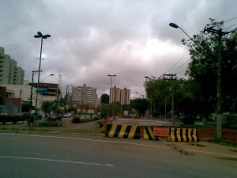
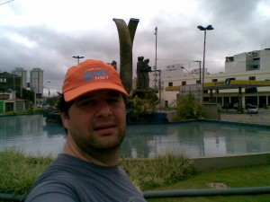
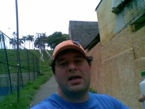
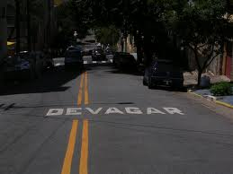

vamo, vamo, vamo…
Alecão
Engenheiro de Software que mora em Santo André-SP
Home page: http://www.dundes.com/wiki/Alex/HomePage
Jabber/GTalk: alex.dundes@gmail.com
Posts by Alecão
Assumindo a postura de BLOG!
96 years
by Alecão
in Ex-sedentário
Durante algum tempo nós tínhamos (eu e o Claudio) uma indefinição do que se tratava o “Cia. Ex-sedentário”. Hoje, por telefone, decidimos assumir a nossa verdadeira postura.
Antes vou relembrar algumas coisas:
Este site surgiu como uma forma de verborragia de sentimentos… Com a vontade de expor as dificuldades e colher os apoios. Desta forma crescemos, formamos amigos e fomos criando uma certa identidade. Com o tempo surgiu mais pessoas interessadas neste modelo, relatar e receber apoio. Thiago, Ana, Luciano, Andrea e Melinha! Outros entraram e depois desistiram. Neste tempo o termo “Ex-sedentário” começou a ficar confuso. Pois no singular indica uma pessoa e já eramos muitos.
Com isso surgiu a necessidade de melhorar a identidade e alteramos para o nome “Cia. Ex-sedentário”. O Cia. na frente do nome serviu para indicar que se tratava de mais de uma pessoa, assim evitando a confusão.
Durante esses 2 anos de blog, foi inevitável a confusão do conceito de blog com o conceito de Equipe. Chegamos a planejar a confecção de camisetas, chegamos a fazer um revezamento como “Ex-sedentários”…
Hoje durante uma conversa com o Claudio, percebemos que na realidade somos um Blog e não uma equipe. Somos pessoas unidas por um ideal (ideal esse que dá nome ao Blog). E essa nova postura nos dá a chance de abraçar as equipes já existentes. Elas que tem um motivo para serem fortes e unidas. Essa nova postura nos dá a chance de participar de várias festas, de sermos livres e felizes.
E é com prazer que digo aqui que o Blog agora pertence a todas as equipes que nos aceitarem. Como diz a música:
Eu sou de ninguém
Eu sou de todo mundo
E todo mundo me quer bem
Eu sou de ninguém
Eu sou de todo mundo
E todo mundo é meu também
No painel lateral, já temos o logotipo (com o link para o site) de 2 equipes que nos acolheram e que sempre querem o nosso bem:

Nós somos 100 Juízo
Nós somos Baleias
Começando a recordar – Equipe TAEQ
26 years
by Alecão
in Ex-sedentário
O site da TAEQ tirou meus post do ar, mas eu tinha eles guardados no meu computador.
E hoje eu resolvi coloca-los aqui no Cia. Ex-sedentário.
Estes posts fazem parte de um passado de transformação e estou colocando eles aqui para depois fazer um post de balanço:
- Como você pretende encarar esse desafio?
- Novamente um recomeço
- Segunda caminhada
- Primeira Corridinha
- Exames
- Ainda bem
- Domingo é dia de parque
- Super Equipe
- Mudança de hábito
- Primeiro dia na academia
- Caminhada de 6 Km
- Mula de carga
- Cautela
- Ansiedade
- Papai conseguiu
- Depois da prova
- Voltando aos treinos
- Valeu a pena
Os posts podem ser acessados também pelo link da Tag: Aventuras do TalEQs
Com isso, vou para 117 posts aqui no Blog…. é muita história!
Segundo aniversário do Cia. Ex-sedentário
76 years
by Alecão
in Ex-sedentário

Pois é, 2 anos se passaram desde aquela ideia maluca. O site ficou abandonado nos últimos 2 meses. Um pouco disso porque vários incidentes marcantes aconteceram com os ex-sedentários nestes últimos meses.
Mas a ideia continua viva. Muito viva mesmo, apenas não estávamos relatando.
Nesses 2 anos, fiz muitos amigos virtuais e reais. Comecei admirar a garra, força, determinação, união, solidariedade, carinho desses novos amigos.
E consegui realizar um sonho de infância que foi correr a São Silvestre. Isso para mim significou muito, pois tive olho torto de médico e mesmo obeso eu consegui correr pelo menos 10 Km dos 15 Km…
Esta vitória pessoal e o companheirismo fez mudar o meu pensamento, fez eu entender que desejando tudo é possível. Este entendimento era claro, mas mesmo assim tinha dúvida e não conseguia acreditar em mim. De repente houve um estalo na minha vida. Noites e noites (e dias também) de reflexão me ajudaram a entender ondem estava o MEU problema, detectado, tive que entrar em ação. Deixei a corrida de lado e comecei a mudar vários aspectos da minha vida pessoal. Mas principalmente comecei a mudar a minha interpretação sobre o mundo em minha volta.
Dentro destas reflexões e mudanças, resolvi primeiro ficar magro antes de voltar a correr para valer (leia-se meia e maratona). E entendi como funciona a compulsão e comecei a trabalhar a causa e não mais o efeito. Isso trouxe um resultado muito positivo, pois em menos 2 meses perdi 9 Kg e hoje já estou 4 Kg mais magro que quando corri a minha última corrida.
Meu sonho quando fiz este site era falar sobre minhas peripécias sobre deixar de ser sedentário (por isso do termo ex-sedentário). Descobri que deixar de ser sedentário, antes mesmo de forçar a barra correndo e mudar a atitude mental. O foco em corridas veio do Claudio que é amante delas. Mesmo correndo várias e gostando, tenho vontade de voltar a praticar uma paixão antiga, o ciclismo. E através deste post quero dizer que vou começar a pedalar no próximo final de semana e claro que vai ter post relatando.
Quero também ao longo deste mês, trazer para cá, os meus depoimentos sobre a minha passagem pela Equipe de Blogueiros TAEQ, aventura essa que merece um post a parte, porque ali foi o embrião de toda a minha transformação de atitude.
O ciclismo vem para ficar, mas claro que não vou abandonar as corridas, apenas diminuir o ritmo (ou melhor, voltar a ter um). E aqui já digo que três provas até o final do ano eu irei participar. E são na realidade para mim 3 festas… 3 animações… 3 reencontros com amigos… 3 vitórias.
- Maratona de Revezamento do Pão de Açúcar (5K) – Aqui é a festa da nossa equipe Cia. Ex-sedentário, onde temos o prazer de juntar os amigos e familiares dos autores deste blog. É uma festa, porque necessita do espírito de equipe para acontecer e isso é muito gratificante. No ano passado, apesar de me dizerem que eu era elite por correr patrocinado, eu queria mesmo era correr com a minha equipe, sofri pacas.
- Maratona de Curitiba (10K) – Festa Baleias. A ideia é o manto coral tomar conta, correr com os muitos amigos que fiz durante esta jornada. é uma festa porque ser Baleias é viver em festa. Esta alegria me contagiou pra valer. Será minha primeira corrida em viagem. Tem toda a logística que deve ser feita com antecedência… Isso é muito louco. Estou curtindo isso.
- São Silvestre (15K) – Para fechar o ano, a melhor festa de todas. O clima é contagiante… Muita gente feliz… E neste ano que correr todo o percurso. E com isso fecharei o ano e carimbar o meu passaporte da mudança de atitude.
2012 ainda esta para ser planejado. Mas com certeza será o ano da minha estréia em meia maratona. Até lá o peso extra não existirá mais e correr será algo tranquilo para mim.
Quanto ao ciclismo… Apenas vontades ainda não materializadas em planejamento. Quero voltar a pedalar aos poucos e quem sabe conseguir romper a barreira dos 100 Km em um único dia, que já consegui uma vez em minha vida e quero superá-la.
Corrida de rua do SESI, 19/06 em São Bernardo do Campo
47 years
by Alecão
in Fazendo mais com menos

Essa é do “Fazendo mais com menos” e com a vantagem de ser perto da minha casa. 🙂
Vai ser no dia 19/06.
10K por R$ 25,00 organizado pelo SESI, nem preciso falar mais.
Vai também ter 5K corrida e 5K caminhada por apenas R$ 10,00.
A largada é na frente do ginásio de São Bernardo, local muito legal.
Baaaaarro
67 years
by Alecão
in Ex-sedentário
Com o pé atolado na lama e de celular na mão resolvi fazer uma vídeo reportagem da aventura deste último sábado.
O Claudião vai fazer um post todo especial completando esta vídeo reportagem. Né Claudião???
Repetéco
47 years
by Alecão
in Ex-sedentário
 Ontem apenas caminhei 2,8 Km e hoje fiz o mesmo treino de domingo de 7,4Km, baixando o tempo em 2 minutos (1h02). 🙂
Ontem apenas caminhei 2,8 Km e hoje fiz o mesmo treino de domingo de 7,4Km, baixando o tempo em 2 minutos (1h02). 🙂
Foi um pouco mais difícil, calor, água acabando antes do tempo… Esta noite consegui dormir um pouco melhor com ajuda de um fitoterápico.
Vai aqui uma dica para matar a curiosidade: Calculadora de gasto calórico.
Mais um pouco
77 years
by Alecão
in Ex-sedentário
Sexta estava com as pernas doendo. Corri/Caminhei apenas por 30 minutos.
Sabadão, tirei para descansar. E…
Inspirado em um post do Rafael que quebrou a barreira do 8Km, decidi que no treino de ontem eu não deveria me limitar na barreira dos 6Km. O Rafael é um corredor dos novos e que tem um perfil similar ao meu. Lendo seus posts eu me vejo quando comecei. Certo que meu início deu muito mais trabalho. Mas estamos lá!
Em meu quintal particular de treinos, resolvi quebrar a barreira na qual eu sempre batia a mão, falava 1, 2, 3 e voltava para casa… 🙂

Sempre fazia esta volta!
Passei pelo chafariz cheio de transito e continuei no canteiro central, agora sem cara de pista de corridas.

Chafariz, rotatória. Nunca passava deste ponto nos treinos
Continuei, mentalizando o próximo monumento na mesma avenida. No canteiro central. Lá pelos 28 minutos de treino atinjo o objetivo. Parei novamente para tirar umas fotos para ilustrar este post.
Deste ponto voltei correndo até em casa. O interessante que de domingo um trecho desta avenida que eu costumo treinar é fechado para lazer, tirei umas fotos para mostrar a vocês como é:
Consegui correr todo o tempo (devagar mas sempre), e cheguei em casa com o tempo de 1 hora e 4 minutos. E com a sensação que poderia ter corrido mais. Estou seguindo os conselhos de rodar o odômetro.
Apenas a noite consegui medir o percurso no MapMyRunBaccardi. E vi que tinha corrido 7,4 Km. Muito Feliz. 🙂
Já a ansiedade, não mudou. A endorfina não está fazendo efeito… To precisando de uns calmantes hehehehe.
Devagar e sempre
77 years
by Alecão
in Ex-sedentário
Ontem postei um desabafo por causa dos treinos fracos que ando fazendo. O pior estava na escasses dos mesmos.
Hoje fui para rua novamente e fiquei pensando na fase que enfrento, na ansiedade que estou vivendo. E lembrei que umas das razões que entrei nessa “de correr”, foi para controlar a ansiedade. Uso os treinos para equilibrar a ansiedade do dia-a-dia. Acontece que as vezes a ansiedade provoca o efeito de não querer fazer nada, a Preguiça. Já na rua, primeira vitória contra a preguiça, as pernas não respondiam bem. A vontade era nem sair da cama. Mesmo assim mantive um trote lento. Mais lento que o de ontem.
Foi então que lembrei do “primeiro mandamento” do Karnazes: Seja Paciente. No qual já escrevi um post sobre isso, neste post falo justamente da ansiedade.
Mantive o rítimo, trotei por 45 minutos seguidos, caminhei 1 minuto (final da subidinha) e trotei mais 3 minutos até chegar em casa, total de 49 minutos, com a mesma distância de ontem. Mas sem dores fortes. A melhora foi de apenas 2 minutos, mas como trotei lento o tempo todo, tive um trabalho muscular mais vigoroso. Estou com as pernas doendo agora… 🙂
Hoje a endorfina trouxe mais resultado que ontem. E se continuar assim a guerra contra a ansiedade será vencida em menos de 1 semana. E vamo, vamo, vamo…
Treinos fraquinhos…
87 years
by Alecão
in Ex-sedentário
Minha rotina de treinos não está das melhores. Devido a chuva, preguiça, ansiedade em excesso. Tenho treinado pouco.
Desde a meia-maratona. Eu treinei 3 vezes. Sendo a última, hoje na hora do almoço.
O segundo treino foi interessante, porque foi perto da casa da minha sogra no bairro do Jaraguá (em São Paulo), era um lugar com aclives e declives, fui junto com meu sogro, minha sogra e minha filha. Eles caminharam e eu aproveitei para fazer alguns tiros ladeira acima, voltava e encontrava eles e repetia o tiro. Fiz isso umas 5 vezes. Depois de 30 minutos de caminhada, apareceu o meu cunhado com o meu outro filho. Caminhamos mais um pouco e meus sogros e meu filhos foram embora e fiquei com meu cunhado. Trotamos por mais 20 minutos.
Hoje a coisa foi estranha. O clima era tudo de bom (friosinho), me dou bem com o frio. Tinha tudo para seu o treino. Mas senti o joelho direito depois de 24 minutos e comecei a caminhar. Não senti mais dor depois de 17 minutos caminhando e voltei a correr, depois de 3 minutos voltei a andar (perdi a vontade), caminhei 3 minutos, corri mais 5 minutos e cheguei em casa. Total de 51 minutos para pouco mais de 6 Km.
Acho que a dor do joelho foi o frio. Estava sem causa antes do treino, e foi a primeira vez desde que comecei a treinar que sinto dor no joelho.
Sabadão tem a corrida de montanha de Paranapiacaba. Vou participar do 6K, escolhemos esta distância pela inexperiência em provas deste tipo. É a primeira prova de montanha que eu, Claudio e Ana vamos participar. Cia. Ex-sendetário está bem representada nesta prova.
.jpg "DSC01716 (1024x241)")
.jpg "DSC01780 (1024x576)")
.jpg "DSC01887 (1024x576)")
.jpg "DSC01912 (1024x576)")
.jpg "DSC01925 (1024x576)")
.jpg "DSC01931 (1024x576)")


{kind=link}
{kind=link}
{kind=link}
{kind=link}
{kind=link}
{kind=link}
{kind=link}
{kind=link}
{kind=link}
{kind=link}
{kind=link}
Últimos comentários